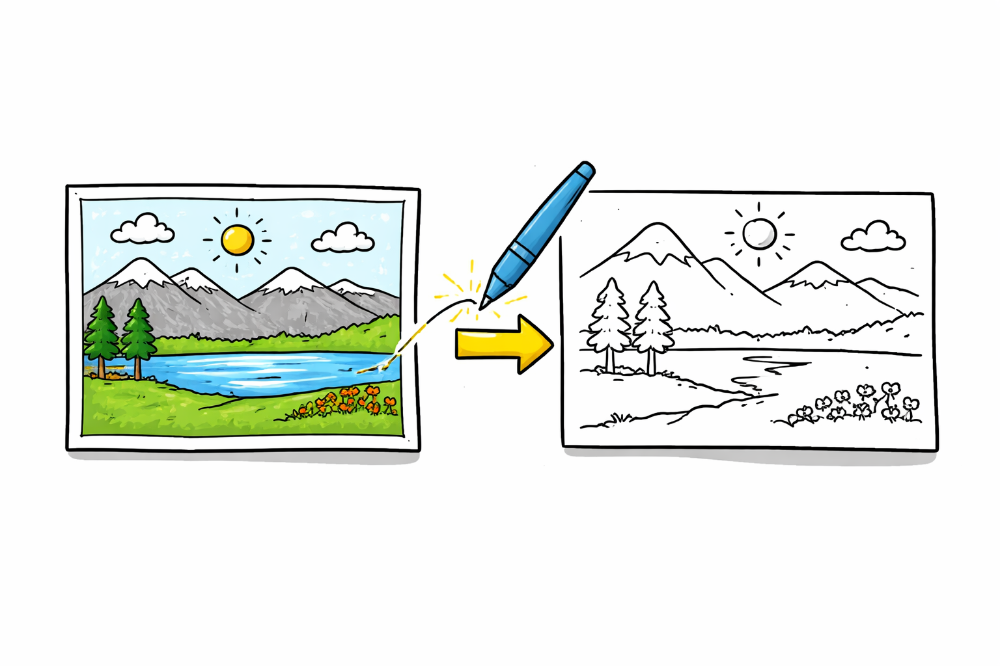
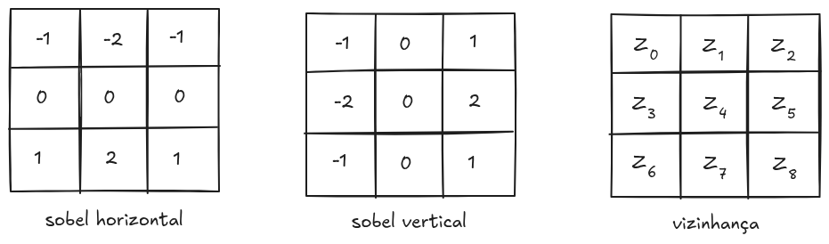
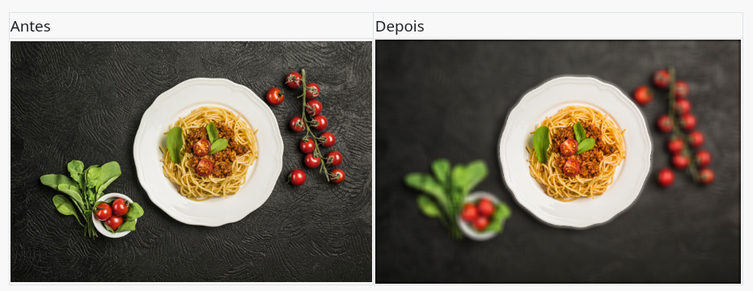

8 Segmentação de Imagens

A segmentação de imagens consiste no processo de dividir uma imagem em regiões distintas e significativas, de modo a simplificar sua representação e tornar sua análise mais eficiente. Em vez de tratar a imagem como um conjunto de pixels isolados, a segmentação permite organizá-la em partes coerentes, facilitando a identificação de objetos ou estruturas de interesse. Cada uma dessas regiões deve apresentar alguma forma de homogeneidade, seja em termos de intensidade, cor, textura ou forma, garantindo que os elementos agrupados compartilhem características semelhantes.
Essa etapa desempenha um papel central no processamento de imagens, pois geralmente é um dos primeiros passos em sistemas mais complexos de interpretação visual. Ao isolar regiões relevantes, a segmentação reduz a complexidade dos dados e direciona as etapas subsequentes — como classificação, reconhecimento ou análise — para áreas específicas da imagem. Dessa forma, ela atua como uma ponte entre o processamento de baixo nível (baseado em pixels) e a compreensão de alto nível (baseada em objetos).
A importância da segmentação se evidencia em diversas aplicações práticas. Na visão computacional, ela é utilizada para identificar e localizar objetos em cenas. Em reconhecimento de padrões, permite extrair características relevantes para classificação. Na área médica, desempenha papel crucial na análise de imagens, como na detecção de tumores em exames de tomografia ou ressonância magnética. Já na inspeção industrial, possibilita a identificação de defeitos, controle de qualidade e automação de processos produtivos. Em todos esses contextos, a qualidade da segmentação impacta diretamente o desempenho das etapas seguintes do sistema.
8.1 Conceito Formal
Do ponto de vista matemático, a segmentação de imagens pode ser definida como a decomposição de uma imagem \(I\) em um conjunto finito de regiões \(R_1, R_2, \dots, R_n\), de modo que essas regiões representem partes coerentes e significativas da imagem. Essa formulação busca garantir que a segmentação não seja apenas uma divisão arbitrária, mas sim uma organização estruturada baseada em propriedades relevantes dos dados.
A primeira condição estabelece que a união de todas as regiões deve reconstruir completamente a imagem original, ou seja, \(\bigcup_{i=1}^{n} R_i = I\). Isso significa que todo pixel da imagem deve pertencer a alguma região segmentada, garantindo que não haja perda de informação durante o processo. Em outras palavras, a segmentação deve cobrir integralmente a imagem.
A segunda condição impõe que as regiões sejam disjuntas entre si, isto é, \(R_i \cap R_j = \emptyset\), para \(i \neq j\). Essa propriedade assegura que cada pixel pertença a uma única região, evitando ambiguidades na representação. Assim, não pode haver sobreposição entre regiões, o que mantém a consistência da segmentação.
Além dessas restrições estruturais, cada região \(R_i\) deve satisfazer um critério de homogeneidade previamente definido. Esse critério pode variar conforme a aplicação e pode envolver características como intensidade dos pixels, cor, textura ou outras propriedades extraídas da imagem. A ideia central é que os pixels dentro de uma mesma região sejam, de alguma forma, semelhantes entre si.
Por fim, exige-se que regiões adjacentes não sejam homogêneas segundo o mesmo critério. Ou seja, se duas regiões vizinhas pudessem ser unificadas sem violar o critério de homogeneidade, então a segmentação não seria considerada adequada. Essa condição garante que a divisão seja significativa, evitando tanto a fragmentação excessiva quanto a fusão indevida de regiões distintas.
Em conjunto, essas propriedades definem uma base formal para a segmentação de imagens, orientando o desenvolvimento de algoritmos que buscam particionar a imagem de maneira coerente, completa e relevante para a aplicação em questão.
8.2 Principais Abordagens
Segmentação por Limiarização
A segmentação por limiarização é uma das técnicas mais simples e amplamente utilizadas em processamento de imagens. Ela se baseia na ideia de separar objetos de interesse do fundo a partir dos níveis de intensidade dos pixels. Nesse método, define-se um valor de limiar \(T\) que permite classificar cada pixel da imagem \(I(x,y)\) em duas classes: objeto ou fundo. Formalmente, pode-se expressar essa operação como:
\[ g(x,y) = \begin{cases} 1 & \text{se } I(x,y) \geq T \\ 0 & \text{se } I(x,y) < T \end{cases} \]
onde \(g(x,y)\) representa a imagem binarizada resultante.
Uma das abordagens mais básicas é a limiarização global, na qual um único valor de limiar \(T\) é utilizado para toda a imagem. Esse método é eficaz quando há boa separação entre os níveis de intensidade do objeto e do fundo, como em imagens com histogramas bimodais. No entanto, em situações onde a iluminação não é uniforme, essa abordagem pode apresentar resultados insatisfatórios.
A detecção de pontos isolados, por exemplo, pode ser obtida de maneira direta, utilizando a máscara abaixo e aplicando a operação de convolução em toda a imagem. Dizemos que um ponto foi detectado se:
\[ |R| > T \]
onde \(T\) é um limiar não-negativo e \(R\) é o resultado da aplicação da máscara.
\[ \begin{bmatrix} -1 & -1 & -1 \\ -1 & 8 & -1 \\ -1 & -1 & -1 \end{bmatrix} \]
O código interativo seguinte exemplifica essa abordagem. No exemplo, pode-se escolher o nível de ruído sal e pimenta na imagem e o limiar. É possível verificar que o ruído (ponto isolado) se mistura com algumas bordas da imagem.
Essa é uma abordagem mais básicas de limiarização global, na qual um único valor de limiar \(T\) é utilizado para toda a imagem. Esse método é eficaz quando há boa separação entre os níveis de intensidade do objeto e do fundo, como em imagens com histogramas bimodais. No entanto, em situações onde a iluminação não é uniforme, essa abordagem pode apresentar resultados insatisfatórios.
Para contornar esse problema, utiliza-se a limiarização adaptativa, em que o valor de \(T\) varia ao longo da imagem, sendo calculado com base em características locais, como média ou mediana de regiões vizinhas. Isso permite uma melhor adaptação a variações de iluminação e melhora a segmentação em imagens mais complexas.
Outra técnica amplamente utilizada é o método de Otsu, que determina automaticamente o valor ótimo de limiar a partir da análise do histograma da imagem. Esse método busca maximizar a variância entre classes (objeto e fundo), ou, de forma equivalente, minimizar a variância intra-classes. Por não exigir intervenção manual, o método de Otsu é bastante popular em aplicações práticas.
Entre as principais vantagens da limiarização estão sua simplicidade de implementação e baixo custo computacional, o que a torna adequada para aplicações em tempo real ou sistemas com recursos limitados. Por outro lado, essa técnica apresenta limitações importantes, sendo sensível a ruídos e a variações de iluminação. Em imagens com baixo contraste ou histogramas pouco definidos, a escolha de um limiar adequado torna-se difícil, comprometendo a qualidade da segmentação.
Segmentação por Detecção de Bordas
A segmentação por detecção de bordas baseia-se na identificação de descontinuidades nos níveis de intensidade da imagem. Essas descontinuidades geralmente correspondem aos contornos de objetos, ou seja, às regiões onde há transições abruptas de intensidade. Dessa forma, ao detectar bordas, torna-se possível delinear estruturas presentes na imagem e, consequentemente, segmentá-las.
Esse tipo de abordagem utiliza operadores diferenciais que realçam variações locais de intensidade. Entre os operadores mais conhecidos estão os filtros de Sobel e Prewitt, que aproximam o gradiente da imagem em direções específicas. O gradiente pode ser representado por:
\[ |\nabla I(x,y)| = \sqrt{G_x^2 + G_y^2} \]
onde \(G_x\) e \(G_y\) representam as derivadas da imagem nas direções horizontal e vertical, respectivamente. Regiões onde o valor do gradiente é elevado indicam a presença de bordas.
Na prática computacional, muitas vezes utiliza-se uma aproximação mais eficiente:
\[ |\nabla I(x,y)| \approx |G_x| + |G_y| \]
Por exemplo, o filtro de Sobel define aproximações discretas para as derivadas parciais \(G_x\) e \(G_y\) por meio de convoluções com máscaras específicas, que combinam diferenciação e suavização.
Assim, \(G_x\) pode ser escrito como:
\[ \begin{aligned} G_x =\;& [I(x+1,y-1) + 2I(x+1,y) + I(x+1,y+1)] \\ &- [I(x-1,y-1) + 2I(x-1,y) + I(x-1,y+1)] \end{aligned} \]
e \(G_y\) de forma análoga:
\[ \begin{aligned} G_y =\;& [I(x-1,y+1) + 2I(x,y+1) + I(x+1,y+1)] \\ &- [I(x-1,y-1) + 2I(x,y-1) + I(x+1,y-1)] \end{aligned} \]
Uma versão simplificada desses cálculos é apresentada no exemplo interativo a seguir. Ao clicar em uma linha da imagem, ela é selecionada e utilizada para construir o perfil horizontal de intensidade correspondente. A partir desse perfil, são gerados o perfil simplificado (amostrado) e as estimativas da primeira e da segunda derivadas, que evidenciam as bordas. Essas derivadas são calculadas por meio de aproximações discretas de uma função unidimensional, com base nas formulações de \(G_x\) ou \(G_y\).
Essas operações estão representadas nas máscaras de convolução para identificação de bordas horizontais e verticais da Figura 8.1.

A aplicação das duas máscaras pode ser simplificada na expressão:
\[ M(x, y) \approx \left| \begin{array}{c} (z_6 + 2z_7 + z_8) - (z_0 + 2z_1 + z_2) \\ (z_2 + 2z_5 + z_8) - (z_0 + 2z_3 + z_6) \end{array} \right| \]
Esta operação está sintetizada no código da Listagem 8.1.
image sobel(image in)
{
image out = img_clone(in);
int nc = in->nc; // number of columns
int nl = in->nr; // number of rows
int max = in->ml; // max intensity level
int *px = in->px;
for (int i = 1; i < nl - 1; i++)
for (int j = 1; j < nc - 1; j++)
{
int z0 = px[(i - 1) * nc + (j - 1)];
int z1 = px[(i - 1) * nc + (j)];
int z2 = px[(i - 1) * nc + (j + 1)];
int z3 = px[(i)*nc + (j - 1)];
int z5 = px[(i)*nc + (j + 1)];
int z6 = px[(i + 1) * nc + (j - 1)];
int z7 = px[(i + 1) * nc + (j)];
int z8 = px[(i + 1) * nc + (j + 1)];
int sum = abs((z6 + 2 * z7 + z8) - (z0 + 2 * z1 + z2)) +
abs((z2 + 2 * z5 + z8) - (z0 + 2 * z3 + z6));
out->px[i * nc + j] = sum;
}
return out;
}O filtro Lapraciano mede a variação da variação da intensidade da imagem, ou seja, corresponde à segunda derivada espacial, indicando quão rapidamente o valor do pixel está mudando em relação aos seus vizinhos. Por essa característica, ele é especialmente eficaz em destacar regiões onde ocorrem mudanças bruscas de intensidade, que correspondem às bordas dos objetos na imagem. Diferentemente do gradiente, que fornece informação direcional (indicando a orientação da borda), o Laplaciano é um operador não direcional, produzindo apenas um valor escalar com sinal, que indica se a região corresponde a um máximo ou mínimo local de intensidade:
\[ \bigtriangledown^2 I= \frac{\delta^2 I}{\delta x^2} + \frac{\delta^2 I}{\delta y^2} \]
\[ \frac{\delta^2 I}{\delta x^2} = I(x+1,y) + I(x-1,y) - 2I(x,y) \]
\[ \frac{\delta^2 I}{\delta y^2} = I(x,y+1) + I(x,y-1) - 2I(x,y) \]
\[ \bigtriangledown^2 I = I(x+1,y) + I(x-1,y) + I(x,y+1) + I(x,y-1)- 4I(x,y) \]
Outro método amplamente utilizado é o detector de Canny, que combina várias etapas, como suavização com filtro Gaussiano, cálculo do gradiente, supressão de não-máximos e limiarização com histerese. Esse método é mais robusto à presença de ruído e tende a produzir bordas mais finas e bem definidas.
Apesar de sua eficiência na detecção de contornos, a segmentação baseada em bordas apresenta limitações importantes. Em muitos casos, as bordas detectadas podem ser incompletas ou apresentar ruídos, dificultando a formação de regiões fechadas. Além disso, variações suaves de intensidade ou baixa qualidade da imagem podem comprometer a detecção adequada das bordas, exigindo etapas adicionais de processamento para obter uma segmentação consistente.
Segmentação por Regiões
A segmentação por regiões baseia-se no princípio de similaridade entre pixels, buscando agrupar aqueles que compartilham características semelhantes, como intensidade, cor ou textura. Diferentemente dos métodos baseados em bordas, que focam nas descontinuidades, essa abordagem enfatiza a homogeneidade interna das regiões, resultando em segmentações mais coerentes em termos de agrupamento de áreas.
Uma das estratégias mais conhecidas dentro dessa abordagem é o crescimento de regiões. Nesse método, o processo tem início a partir de um conjunto de sementes, que podem ser definidas manualmente ou automaticamente. A partir dessas sementes, as regiões são expandidas iterativamente, incorporando pixels vizinhos que satisfaçam um critério de similaridade. Esse critério pode ser, por exemplo, a diferença de intensidade entre o pixel candidato e a média da região, frequentemente expressa como \(|I(x,y) - \mu_R| < T\), onde \(\mu_R\) representa a média da região e \(T\) um limiar de tolerância. O processo continua até que nenhum novo pixel possa ser adicionado às regiões existentes.
Outra abordagem importante é o método de divisão e fusão. Nesse caso, a imagem é inicialmente considerada como uma única região e, caso não satisfaça um critério de homogeneidade, é subdividida em partes menores. Uma forma comum de realizar essa divisão é por meio de estruturas hierárquicas, como o quadtree, em que a imagem é recursivamente particionada em quatro sub-regiões. Após a etapa de divisão, regiões adjacentes que apresentem características semelhantes podem ser fundidas, garantindo uma segmentação mais equilibrada.
Essas técnicas são particularmente eficazes em imagens onde as regiões possuem propriedades bem definidas e relativamente uniformes. No entanto, a escolha dos critérios de similaridade e dos limiares adequados é fundamental para o sucesso do método, podendo influenciar diretamente na qualidade da segmentação obtida.
Segmentação por Morfologia Matemática e Watershed
A segmentação baseada em morfologia matemática utiliza operadores que exploram a forma e a estrutura dos objetos presentes na imagem. Esses operadores são aplicados com o auxílio de um elemento estruturante \(B\), que define a vizinhança considerada nas operações. Entre as principais operações morfológicas estão a erosão e a dilatação. A erosão tende a reduzir as regiões claras da imagem, sendo útil para remover pequenos ruídos e separar objetos conectados, enquanto a dilatação expande essas regiões, preenchendo falhas e conectando componentes próximos.
A partir dessas operações básicas, definem-se operações compostas, como a abertura e o fechamento. A abertura, dada por \(A \circ B = (A \ominus B) \oplus B\), é eficaz na remoção de pequenos objetos ou ruídos, preservando a forma geral das estruturas maiores. Já o fechamento, definido como \(A \bullet B = (A \oplus B) \ominus B\), é utilizado para preencher lacunas e suavizar contornos. Essas operações são amplamente empregadas no refinamento de segmentações, na separação de objetos conectados e na eliminação de imperfeições.
Outra abordagem importante é a segmentação por watershed (Beucher e Lantuejoul (1979), Beucher (1992), Vincent e Soille (1991), Roerdink e Meijster (2000)), que interpreta a imagem como uma superfície topográfica, na qual os níveis de intensidade representam altitudes. Nessa interpretação, regiões de baixa intensidade correspondem a vales ou bacias, enquanto regiões de alta intensidade representam divisores de água. O algoritmo simula um processo de inundação, no qual a água começa a preencher as bacias a partir de mínimos locais, e barreiras são construídas quando diferentes regiões em crescimento se encontram.
Esse processo resulta na divisão da imagem em regiões distintas, associadas às bacias formadas. No entanto, um problema comum do método watershed é a supersegmentação, causada pela presença de múltiplos mínimos locais, muitas vezes decorrentes de ruído ou pequenas variações na imagem. Para contornar esse problema, é comum utilizar técnicas baseadas em marcadores, nas quais pontos de interesse (internos aos objetos e ao fundo) são previamente definidos, guiando o processo de segmentação e produzindo resultados mais consistentes e controlados.
Algoritmo de Watershed por Marcadores
O algoritmo de watershed baseado em marcadores pode ser descrito como um processo de inundação controlada a partir de regiões previamente rotuladas. A imagem é interpretada como uma superfície topográfica, onde os níveis de cinza representam altitudes. O objetivo é expandir as regiões a partir dos marcadores, respeitando a topologia da imagem e identificando as linhas de separação (watershed).
Inicialmente, cada marcador recebe um rótulo distinto, representando uma região de origem. Em seguida, constrói-se uma fila de prioridade organizada por níveis de cinza, isto é, para cada nível \(h\) existe um conjunto de pixels associados a essa altitude.
O algoritmo não insere os marcadores diretamente na fila. Em vez disso, apenas os pixels vizinhos aos marcadores são inseridos, com prioridade correspondente ao seu nível de cinza. A partir desse ponto, o processo iterativo de expansão das regiões é iniciado.
Para cada pixel \(x\) extraído da fila de prioridade, executam-se os seguintes passos:
Analisa-se a vizinhança de \(x\) e identifica-se o conjunto de rótulos distintos presentes em seus vizinhos já rotulados, desconsiderando rótulos de borda (watershed).
Se os vizinhos de \(x\) pertencem a uma única região, ou seja, existe apenas um rótulo distinto, então \(x\) é incorporado a essa região e recebe o mesmo rótulo.
Se os vizinhos de \(x\) pertencem a duas ou mais regiões com rótulos distintos, então \(x\) é classificado como ponto de watershed, recebendo um rótulo especial (por exemplo, \(4\)), indicando que ele pertence à linha de separação entre regiões.
Caso \(x\) tenha sido rotulado (como região ou watershed), todos os seus vizinhos ainda não rotulados e que não estejam na fila de prioridade são inseridos na fila, com prioridade correspondente ao seu nível de cinza.
Esse processo é repetido até que a fila de prioridade esteja vazia, garantindo que todos os pixels alcançáveis a partir dos marcadores sejam processados.
Ao final do algoritmo, a imagem estará segmentada em regiões associadas aos marcadores iniciais, separadas por linhas de watershed que representam as fronteiras entre diferentes bacias de atração.
O exemplo interativo seguinte apresenta uma simulação desse algoritmo de watershed por marcadores para uma imagem unidimensional. Inicialmente, estão marcados os pontos \(a = 1\), \(f = 2\) e \(h = 3\). A cada passo os pontos vizinhos das regiões marcadas são colocados nas filas apropriadas. O pontos de watershed são marcados com cor amarela (valor = 4).
Os exemplos seguintes demonstram o mesmo algoritmo para imagens. O primeiro exemplo mostra a execução do algoritmo de forma bidimensional. E o segundo mostra a mesma imagem como um relevo tridimensional. Existe uma marca para cada região da imagem. E o crescimento da regiões (inundação do relevo) é realizado até que são encontradas as linhas divisoras de água (watershed).
A mesma simulação para um representação da mesma imagem como superfície em sequência:
O exemplo interativo seguinte está a implementação para segmentação de imagens reais. Pode-se carregar uma imagem. Para execução do algoritmo basta clicar dentro de alguma região. O clique define um marcador. O outro marcador é a borda da imagem. O algoritmo é então aplicado sobre a imagem de gradiente morfológico (dilatação menos erosão) que evidencia as bordas. Uma linha vermelha seja adicionada a imagem, como resultado da operação de watershed para identificação da borda que contorna o ponto marcado.
Segmentação Baseada em Clustering
A segmentação baseada em clustering fundamenta-se no agrupamento de pixels de acordo com a similaridade entre suas características. Diferentemente de abordagens que exploram diretamente a estrutura espacial da imagem, esses métodos tratam os pixels como pontos em um espaço de características, no qual atributos como intensidade, cor e posição são utilizados para formar grupos homogêneos. O objetivo é particionar esse espaço em conjuntos distintos, de modo que pixels pertencentes ao mesmo grupo sejam mais semelhantes entre si do que em relação aos demais.
Um dos algoritmos mais utilizados nessa abordagem é o K-means, que busca dividir os dados em \(K\) grupos previamente definidos. O algoritmo funciona iterativamente, alternando entre a atribuição de cada pixel ao centroide mais próximo e a atualização dos centroides com base na média dos elementos do grupo. Formalmente, o método procura minimizar a soma das distâncias quadráticas entre os pontos e seus respectivos centroides, conforme expresso por:
\[ J = \sum_{k=1}^{K} \sum_{x_i \in C_k} | x_i - \mu_k |^2 \]
onde \(C_k\) representa o conjunto de pontos do cluster \(k\) e \(\mu_k\) seu centroide.
O código exemplo seguinte implementa essa técnica para imagens:
Outro método relevante é o Mean Shift, que não exige a definição prévia do número de grupos. Esse algoritmo baseia-se na estimativa de densidade de probabilidade no espaço de características, deslocando iterativamente cada ponto em direção às regiões de maior densidade. Como resultado, os pontos convergem para modos da distribuição, formando clusters de maneira automática.
A escolha dos atributos utilizados no processo de agrupamento é fundamental para o sucesso da segmentação. Características como intensidade são adequadas para imagens em tons de cinza, enquanto a cor é amplamente utilizada em imagens RGB. A inclusão da posição espacial dos pixels também pode melhorar os resultados, ao favorecer a formação de regiões mais compactas e coerentes. Dessa forma, a segmentação por clustering oferece uma abordagem flexível e poderosa, especialmente em cenários onde a separação entre regiões não é claramente definida por limiares simples.
Segmentação com Inteligência Artificial
A segmentação com inteligência artificial representa uma das abordagens mais avançadas e eficazes no processamento de imagens moderno. Diferentemente dos métodos clássicos, que dependem de regras explícitas e critérios definidos manualmente, essas técnicas são capazes de aprender automaticamente padrões complexos diretamente a partir dos dados. Isso permite lidar com cenários desafiadores, como variações de iluminação, ruído, oclusões e grande diversidade de formas e texturas.
Entre os principais modelos utilizados destacam-se as redes neurais convolucionais (CNNs), que exploram a estrutura espacial das imagens por meio de operações de convolução. Essas redes aprendem representações hierárquicas, начиная desde características simples, como bordas e texturas, até padrões mais abstratos, como formas e objetos completos. Essa capacidade torna as CNNs particularmente adequadas para tarefas de segmentação.
Arquiteturas específicas foram desenvolvidas para segmentação de imagens, como a U-Net, amplamente utilizada em aplicações médicas. Esse modelo apresenta uma estrutura em formato de “U”, composta por um caminho de contração (encoder), responsável pela extração de características, e um caminho de expansão (decoder), que reconstrói a segmentação com precisão espacial. Outro modelo relevante é o Mask R-CNN, que estende técnicas de detecção de objetos ao fornecer, além das caixas delimitadoras, máscaras de segmentação para cada objeto identificado na imagem.
Esses métodos são capazes de produzir segmentações altamente precisas, mesmo em imagens complexas, desde que sejam treinados com conjuntos de dados adequados e bem anotados. No entanto, sua aplicação envolve desafios, como a necessidade de grande quantidade de dados rotulados, alto custo computacional e maior complexidade de implementação. Ainda assim, a segmentação baseada em inteligência artificial tem se consolidado como uma das principais abordagens em aplicações de ponta, como diagnóstico médico, veículos autônomos e análise de cenas em tempo real.
8.3 Avaliação da Segmentação
A avaliação da segmentação de imagens é uma etapa fundamental para medir a qualidade dos resultados obtidos por diferentes métodos. Em geral, essa avaliação é realizada por meio da comparação entre a segmentação produzida pelo algoritmo e uma segmentação de referência, conhecida como ground truth, que representa a resposta ideal, geralmente obtida por anotação manual ou por especialistas.
Entre os critérios mais utilizados estão as métricas de precisão (precision) e revocação (recall). A precisão mede a proporção de pixels corretamente identificados como pertencentes ao objeto em relação ao total de pixels classificados como objeto pelo algoritmo, sendo definida como \(\text{Precisão} = \frac{TP}{TP + FP}\), onde \(TP\) representa os verdadeiros positivos e \(FP\) os falsos positivos. Já o recall mede a capacidade do método de identificar todos os pixels que realmente pertencem ao objeto, sendo dado por \(\text{Recall} = \frac{TP}{TP + FN}\), onde \(FN\) corresponde aos falsos negativos.
Outra métrica amplamente utilizada é o índice de Jaccard, também conhecido como Intersection over Union (IoU). Essa medida avalia a sobreposição entre a segmentação obtida e o ground truth, sendo definida como:
\[ \text{IoU} = \frac{|A \cap B|}{|A \cup B|} \]
onde \(A\) representa o conjunto de pixels segmentados pelo algoritmo e \(B\) o conjunto de pixels da segmentação de referência. Quanto maior o valor de IoU, maior a concordância entre as duas segmentações.
A comparação com o ground truth permite uma análise objetiva do desempenho dos métodos, sendo essencial em aplicações que exigem alta precisão, como na área médica ou em sistemas críticos. No entanto, a obtenção de dados de referência confiáveis pode ser trabalhosa e, em alguns casos, sujeita a variações entre diferentes anotadores. Ainda assim, essas métricas constituem ferramentas indispensáveis para o desenvolvimento e validação de algoritmos de segmentação.
8.4 Desafios
A segmentação de imagens enfrenta diversos desafios que podem comprometer significativamente a qualidade dos resultados. Um dos principais problemas é a presença de ruído, que introduz variações indesejadas nos níveis de intensidade dos pixels. Esse ruído pode gerar falsas bordas, dificultar a identificação de regiões homogêneas e levar a erros na classificação dos pixels.
Outro desafio importante está relacionado às variações de iluminação. Mudanças na intensidade da luz ao longo da imagem podem fazer com que regiões pertencentes ao mesmo objeto apresentem valores distintos, dificultando a aplicação de métodos baseados em limiarização ou similaridade. Esse problema é especialmente crítico em ambientes não controlados, onde a iluminação não é uniforme.
A presença de objetos sobrepostos ou parcialmente ocluídos também representa uma dificuldade significativa. Nesses casos, os contornos dos objetos podem não estar claramente definidos, o que compromete tanto métodos baseados em bordas quanto abordagens por regiões. A separação adequada desses objetos exige técnicas mais sofisticadas, muitas vezes combinando diferentes estratégias de segmentação.
Além disso, imagens com texturas complexas podem dificultar a definição de critérios de homogeneidade. Regiões texturizadas apresentam variações naturais que podem ser interpretadas erroneamente como mudanças de região, levando à supersegmentação. Isso exige o uso de descritores mais robustos ou métodos que considerem informações contextuais.
Por fim, a escolha de parâmetros adequados é um desafio recorrente em muitos algoritmos de segmentação. Valores como limiares, tamanhos de janelas ou critérios de similaridade influenciam diretamente o resultado final. A definição desses parâmetros pode depender do tipo de imagem e da aplicação, exigindo ajustes empíricos ou métodos automáticos de otimização.
8.5 Aplicações
A segmentação de imagens possui um amplo espectro de aplicações, sendo uma etapa essencial em diversos sistemas de análise e interpretação visual. Sua capacidade de isolar regiões de interesse permite extrair informações relevantes de forma mais eficiente, servindo como base para tarefas mais complexas.
Na área de diagnóstico médico, a segmentação é amplamente utilizada para identificar estruturas anatômicas e detectar anomalias em exames de imagem, como tomografias, ressonâncias magnéticas e radiografias. Aplicações incluem a delimitação de órgãos, a detecção de tumores e o acompanhamento da evolução de doenças, contribuindo diretamente para a tomada de decisão clínica.
Em veículos autônomos, a segmentação desempenha um papel crucial na compreensão do ambiente ao redor. Ela é utilizada para identificar elementos como faixas de rodagem, pedestres, veículos e obstáculos, permitindo que o sistema tome decisões seguras em tempo real. Nesse contexto, a segmentação semântica e a segmentação por instâncias são particularmente importantes.
Na agricultura de precisão, técnicas de segmentação são aplicadas para monitorar culturas, identificar pragas, avaliar o estado de saúde das plantas e estimar produtividade. A análise de imagens obtidas por drones ou satélites permite segmentar áreas específicas, auxiliando no manejo eficiente dos recursos agrícolas.
No reconhecimento facial, a segmentação é utilizada para isolar regiões relevantes do rosto, como olhos, nariz e boca, facilitando a extração de características e a identificação de indivíduos. Esse processo melhora a robustez dos sistemas de reconhecimento, especialmente em condições variadas de iluminação e expressão.
Por fim, na análise de documentos, a segmentação permite separar diferentes componentes de uma imagem, como texto, figuras, tabelas e fundo. Isso é fundamental para aplicações como digitalização, reconhecimento óptico de caracteres (OCR) e organização automática de documentos, contribuindo para a automação de processos e a recuperação eficiente de informações.
8.6 Considerações Finais
A segmentação de imagens constitui uma etapa central no processamento de imagens, desempenhando um papel fundamental na transição entre a análise de baixo nível, baseada em pixels, e a interpretação de alto nível, orientada a objetos e significados. Ao particionar a imagem em regiões relevantes, ela fornece uma representação mais estruturada dos dados, facilitando tarefas posteriores como reconhecimento, classificação e análise semântica.
Entretanto, não existe um método universal capaz de atender de forma satisfatória a todos os cenários. A escolha da técnica de segmentação depende de diversos fatores, incluindo o tipo de imagem, a natureza dos objetos de interesse, as condições de aquisição e os requisitos da aplicação. Em muitos casos, a combinação de diferentes abordagens pode ser necessária para alcançar resultados mais robustos.
Os métodos clássicos, como limiarização, detecção de bordas e segmentação por regiões, continuam sendo amplamente utilizados devido à sua simplicidade, interpretabilidade e baixo custo computacional. Por outro lado, abordagens mais recentes baseadas em aprendizado profundo têm ganhado destaque, especialmente em aplicações complexas, por sua capacidade de modelar padrões sofisticados e produzir segmentações de alta precisão.
Dessa forma, a segmentação de imagens permanece como um campo ativo de pesquisa e desenvolvimento, no qual avanços teóricos e tecnológicos continuam ampliando suas possibilidades de aplicação e melhorando a qualidade dos resultados obtidos.
Exercício 1 — Conceitual
Explique com suas palavras:
- O que é segmentação de imagens
- Qual o objetivo da segmentação no processamento de imagens
- Diferença entre segmentação e reconhecimento
Exercício 2 — Limiarização
Explique:
- O que é limiarização (thresholding)
- Diferença entre limiarização global e local
- Em quais situações cada uma é mais adequada
Exercício 3 — Escolha do limiar
Explique:
- Como o histograma pode auxiliar na escolha do limiar
- O que caracteriza um bom limiar
- Problemas ao escolher um limiar inadequado
Exercício 4 — Método de Otsu
Explique:
- O princípio do método de Otsu
- O que significa maximizar a variância entre classes
- Em quais situações esse método funciona bem
Exercício 5 — Segmentação por regiões
Explique:
- O que é crescimento de regiões
- Como escolher sementes (seeds)
- Critérios de similaridade utilizados
Exercício 6 — Detecção de bordas
Explique:
- O que são bordas em uma imagem
- Como operadores como Sobel e Canny são utilizados
- Diferença entre segmentação por bordas e por regiões
Exercício 7 — Watershed
Explique:
- A ideia do algoritmo de watershed
- O conceito de bacias e linhas de divisão
- Problemas comuns (ex: supersegmentação)
Exercício 8 — Pós-processamento
Explique:
- Por que é necessário pós-processar uma segmentação
- Como operações morfológicas ajudam nesse processo
- Exemplos de refinamento de regiões
Exercício 9 — Implementação prática (limiarização)
Implemente um programa que:
- Leia uma imagem em tons de cinza
- Aplique limiarização global
- Permita ao usuário escolher o valor do limiar
- Gere a imagem binária resultante
Exercício 10 — Implementação prática (Otsu)
Implemente um programa que:
- Calcule automaticamente o limiar usando o método de Otsu
- Compare o resultado com limiarização manual
Exercício 11 — Implementação prática (regiões)
Implemente um algoritmo de:
- Crescimento de regiões
- Escolha de uma ou mais sementes
- Segmentação baseada em similaridade
Exercício 12 — Comparação
Compare os métodos:
- Limiarização
- Crescimento de regiões
- Detecção de bordas
Discuta vantagens, limitações e aplicações de cada um.
Questão reflexiva
Explique a importância da segmentação de imagens em aplicações como:
- Diagnóstico médico
- Veículos autônomos
- Reconhecimento facial
- Agricultura de precisão
Discuta os desafios envolvidos na segmentação em imagens reais.
Objetivo
O objetivo desta atividade é explorar técnicas de segmentação de imagens coloridas, utilizando o algoritmo Watershed, além de aplicar conceitos como cálculo de intensidade, gradiente e filtragem (borramento) em imagens digitais.
Problema
A segmentação de imagens consiste em dividir uma imagem em regiões de interesse, como separar o objeto principal do fundo.
Nesta atividade, você deverá utilizar o algoritmo Watershed (Linha Divisora de Águas) para segmentar uma imagem colorida, isolando o objeto central e aplicando um efeito de borramento (desfoque) no restante da imagem (fundo), conforme ilustrado na Figura 8.2.

O resultado esperado é uma imagem onde:
- o objeto principal permanece nítido
- o fundo aparece desfocado
Descrição
Escolha uma imagem colorida (formato PPM), diferente do exemplo apresentado em aula.
Desenvolva um programa (
borre.c) que execute as seguintes etapas:
Etapa 1 — Conversão para tons de cinza
Calcule a imagem de intensidade a partir da imagem colorida:
\[ I = \frac{R + G + B}{3} \]
Etapa 2 — Cálculo do gradiente
- Calcule o gradiente da imagem de intensidades
- O objetivo é destacar os contornos da imagem
Etapa 3 — Segmentação com Watershed
Aplique o algoritmo Watershed sobre a imagem de gradiente
O resultado deve classificar os pixels em três categorias:
- MARK1 → objeto (região de interesse)
- MARK2 → fundo
- WSHED → contorno entre as regiões
- MARK1 → objeto (região de interesse)
Etapa 4 — Borramento do fundo
Utilize o resultado da segmentação para:
- Manter os pixels da região MARK1 (objeto) inalterados
- Aplicar borramento nos pixels da região MARK2 (fundo)
O borramento pode ser calculado como:
\[ \text{borrar}_{i,j} = \frac{1}{(2k+1)^2} \sum_{i=-k}^{k} \sum_{j=-k}^{k} x_{i,j} \]
onde:
- (x) representa os canais R, G ou B
- (k) define o tamanho da vizinhança
Entrada
- Imagem colorida no formato PPM
Saída
O programa deve gerar:
- Imagem em tons de cinza (intensidade)
- Imagem do gradiente
- Resultado da segmentação (Watershed)
- Imagem final com fundo borrado
Execução
O programa deve ser executado via linha de comando:
./borre imagem.ppm